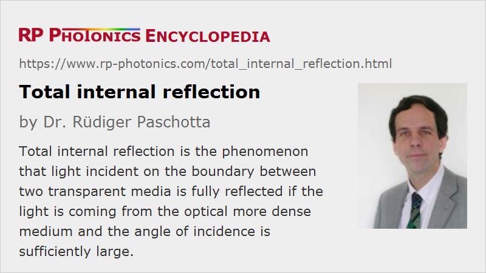

Total Internal Reflection
Acronym: TIR
Definition: the phenomenon that light incident on the boundary between two transparent media is fully reflected if the light is coming from the optical more dense medium and the angle of incidence is sufficiently large
German: Totalreflexion
How to cite the article; suggest additional literature
Author: Dr. Rüdiger Paschotta
Total internal reflection means that light is fully reflected at the interface between two transparent media if the angle of incidence (i.e., the angular deviation from perpendicular incidence) is larger than the so-called critical angle. That critical angle is determined by the equation
where n1 is the refractive indices of the medium from which the beam comes, and n2 the refractive index of the other medium. Beyond that angle, Snell's law for the calculation of the output angle could not be fulfilled for any real output angle. Essentially, the component of the wave vector along the interface, which would have to be identical for the incoming and the transmitted beam, is so large for the incoming beam that it cannot be matched by a transmitted beam even with an output angle of 90°.
Figure 2 shows how the reflectivities for s and p polarization depend on the angle of incidence, if the light comes from a medium with refractive index 1.47 (e.g., silica at 1064 nm), and there is air on the other side of the interface. For both s and p polarization, the reflectivity becomes 100% (assuming perfect surface quality) above the critical angle, which is in this case 43.6°.
Applications of Total Internal Reflection
The phenomenon of total internal reflection is applied in many forms:
- The guidance of light in optical fibers can be understood on that basis. The acceptance angle for a multimode fiber can be calculated using the equation above in combination with Snell's law for the refraction at the input face.
- Monolithic ring resonators can be fabricated where total internal reflection occurs at all or some of the interfaces. For an example, see the article on nonplanar ring oscillators.
- In slab lasers, total internal reflection allows one to realize a zig-zag path through the gain medium, which has various advantages. The evanescent field can also be exploited in various ways, e.g. in chemical sensors or in experiments of atom optics.
The effect can also be disturbing:
- Particularly in slab lasers, total internal reflection can lead to parasitic lasing.
- In light-emitting diodes, total internal reflection makes it difficult to efficiently extract the generated light.
Details of the Reflection Process
Although all optical power is reflected at the interface, i.e., no power at all is transmitted, the optical field somewhat penetrates the second medium The field amplitude of that evanescent wave decays exponentially – in most cases with a very short decay length, so that some field intensity can be detected only very close to the interface. Only for beam angles close to the critical angle, the decay is relatively slow. The exponential decay can be understood as the consequence of an imaginary wave vector component perpendicular to the interface. The Poynting vector has no component perpendicular to the interface, as there is no energy transport in that direction.
Another detail is a small lateral displacement of the reflected beam with respect to the position which may be expected. This corresponds to a reflection point which is not at the interface but slightly shifted into the second medium. That shift is named the Goos–Hänchen effect after the persons who discovered it [1].
Frustrated Total Internal Reflection
If there is a second interface to a denser third optical medium so close to the first interface that it touches the evanescent field, some light may be transmitted into that third medium, and the reflectivity of the interface is reduced accordingly. That phenomenon is called frustrated total internal reflection (FTIR) – which is somewhat misleading, as the reflection is no more total. The effect can be interpreted as a kind of tunneling.
As an example, frustrated total internal reflection may be used for input/output coupling of an optical resonator. When a prism is put closer and closer to a reflection point of the resonator, more and more light can be coupled in or out. The distance control needs to be very precise, as the coupling strength reacts very sensitively to small changes of the gap width.
Questions and Comments from Users
Here you can submit questions and comments. As far as they get accepted by the author, they will appear above this paragraph together with the author’s answer. The author will decide on acceptance based on certain criteria. Essentially, the issue must be of sufficiently broad interest.
Please do not enter personal data here; we would otherwise delete it soon. (See also our privacy declaration.) If you wish to receive personal feedback or consultancy from the author, please contact him e.g. via e-mail.
By submitting the information, you give your consent to the potential publication of your inputs on our website according to our rules. (If you later retract your consent, we will delete those inputs.) As your inputs are first reviewed by the author, they may be published with some delay.
Bibliography
| [1] | F. Goos and H. Hänchen, “Über das Eindringen des totalreflektierten Lichtes in das dünnere Medium”, Ann. Physik 435 (5), 383 (1947), doi:10.1002/andp.19434350504 |
See also: refraction, acceptance angle in fiber optics, numerical aperture, nonplanar ring oscillators, prisms, refractive index
|  |
If you like this page, please share the link with your friends and colleagues, e.g. via social media:
These sharing buttons are implemented in a privacy-friendly way!